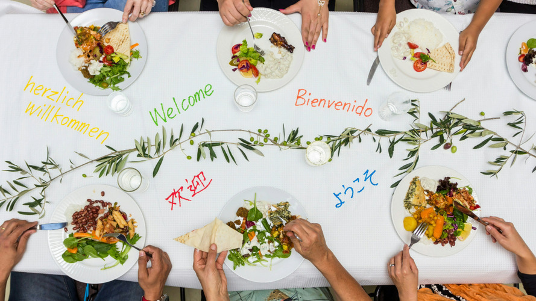

South Korea's Demographic Crossroads: The Imperative for Multicultural Integration and Economic Growth
Published October 15

South Korea, once a nation celebrated for its social cohesion, now finds itself at a crossroads: continue on the path it has charted for itself or forge a new one to include a focus on multiculturalism. South Korea is known for its cultural and ethnic homogeneity. This trait has worked to shape the nation’s identity and economic trajectory. However, in the wake of the plummeting birth rate and rapidly aging population, cultural foreign workers, multicultural families, and second-generation immigrants are coming to play an increasingly important role in the nation; multiculturalism can be a means by which the nation can propel its economic growth. While the nation has already taken strides in promoting multiculturalism through language programs and diversity workshops, there are still a myriad of ways to integrate foreign workers into Korean Society to promote economic growth.
Korea is beleaguered by a demographic crisis - having the world’s lowest fertility rate and a rapidly aging population- putting immense pressure on the nation’s economy. Currently, South Korea’s fertility rate is hitting rock bottom, reaching 0.75 children per woman in 2024. At the same time, nearly 1 in 5 South Koreans is over the age of 65, and this could exceed 40% by the year 2050. The absence of a working-age populace has made imported labor a vital part of the Korean economy. The inflow of foreign workers helped ease labor shortages by increasing the number of laborers in sectors that domestic workers favor less. Moreover, business owners are receptive to immigrant workers. For example, a study done in a 2024 survey by the Korea Enterprise Federation revealed that 42.5% of business owners in the manufacturing sector believe that the government should expand the E-9 visa program, a non-professional work visa for foreign workers in small and medium-sized enterprises (SMEs).
However, while foreign workers are essential to the vitality of the nation’s economy, workers often face systematic challenges such as language barriers, limited mobility, and a lack of social inclusion. Social integration and assimilation are one of the cornerstones of multiculturalism. However, while the Korean language has been a source of unity for the citizens of Korea, it has served as a barrier for foreigners hoping to augment their professional opportunities in Korea.
In the past year alone, almost 300,000 foreign nationals have resided in South Korea on an E-9 Visa, which is predominantly for mining and manufacturing. However, the majority of these workers fail to comprehend the safety videos and training. According to current laws, workplaces must provide 30 minutes to 1 hour of safety and health training before hiring laborers; however, this mandate is seldom followed. This leads to deleterious conditions for workers and the lack of social inclusion.
Additionally, despite their indispensable role in the Korean Economy, these workers often endure deleterious living and working conditions, limited social mobility, and marginalization, which often impedes their integration into Korean Society. Many foreign workers reside in employer-provided housing with poor sanitation and limited privacy. This issue is further underscored by 1 in 5 employees in the employment permit system still live in inadequate housing conditions, such as greenhouses, containers, and shacks.
To rectify these issues, the government can provide incentive programs such as subsidized housing. By working closely with local governments, the state can strive to provide affordable, safe, and hygienic housing options for foreign workers. This would not only elevate the quality of life of foreign workers but also promote economic stability and social inclusion, as migrant workers would feel supported and assimilated into South Korean society. Furthermore, one of the most crucial yet often overlooked aspects of economic integration is promoting social integration. Language barriers and cultural unfamiliarity can be breeding grounds for discrimination. These scenarios often discourage foreign workers from entering the Korean workforce.
However, beyond the workplace, multicultural education can be strengthened within schools. While there are 180,000 multicultural children currently enrolled in Korean Schools, only 30% of these schools offer multicultural education, which serves to promote and understand other cultures. To reverse this phenomenon, multicultural education should be made mandatory, and teachers must receive formal training to handle issues such as bias and diversity. In addition, curriculum and textbook designers should work to create content that reflects multiculturalism in a positive light.
South Korea stands at a pivotal crossroads. While the nation’s deep-rooted cultural homogeneity was once considered a strength by consolidating national unity and promoting industrial growth, it now presents a challenge in the face of demographic challenges. With one of the world’s most rapidly dwindling birth rates and a rampant aging population, South Korea is in dire need of labor capital to sustain its economy. One of the most viable solutions is promoting multiculturalism.